Arduino
1 Introduction - Getting connected/LED control
- Arduino is an open source physical computing platform based on a simple input/output (I/O) board and a development environment that implements the Processing language.
- Arduino can be used to develop standalone interactive objects or can be connected to software on your computer.
- The Adruino boards come in many different variations,
- Here are some examples:
- The Arduino Uno

- The Arduino nano (this is the one we will use).
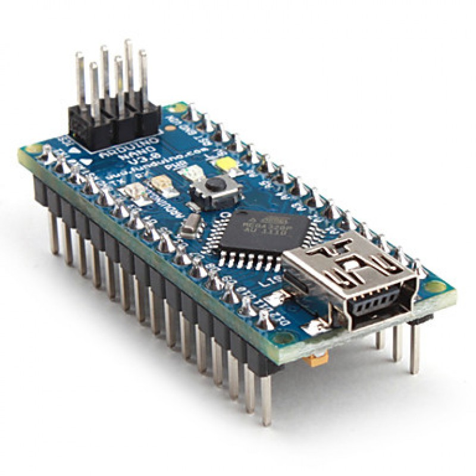
- Like all microcontrollers, including the Genie microcontroller. All will have a pinout diagram, explain which pins will be connected to which input or output pins.
- Below is the pinout diagram for the Arduino Nano.
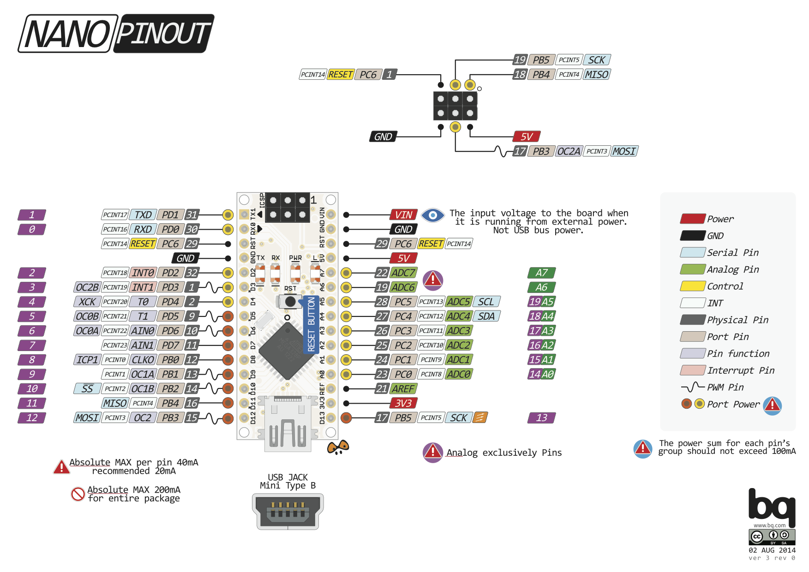
Learn It
- In this project, you will learn to code basic Arduino projects, called 'Sketches'.
- To do this you will need to use the Adruino IDE (Integrated Development Environment).
- This can be found in the S&C and Computing file on your desktop.
- Once you have opened the Arduino file, you will see the program below.
- The program is divided into 3 main sections,
- The variable declaration section.
- The setup section.
- The loop section
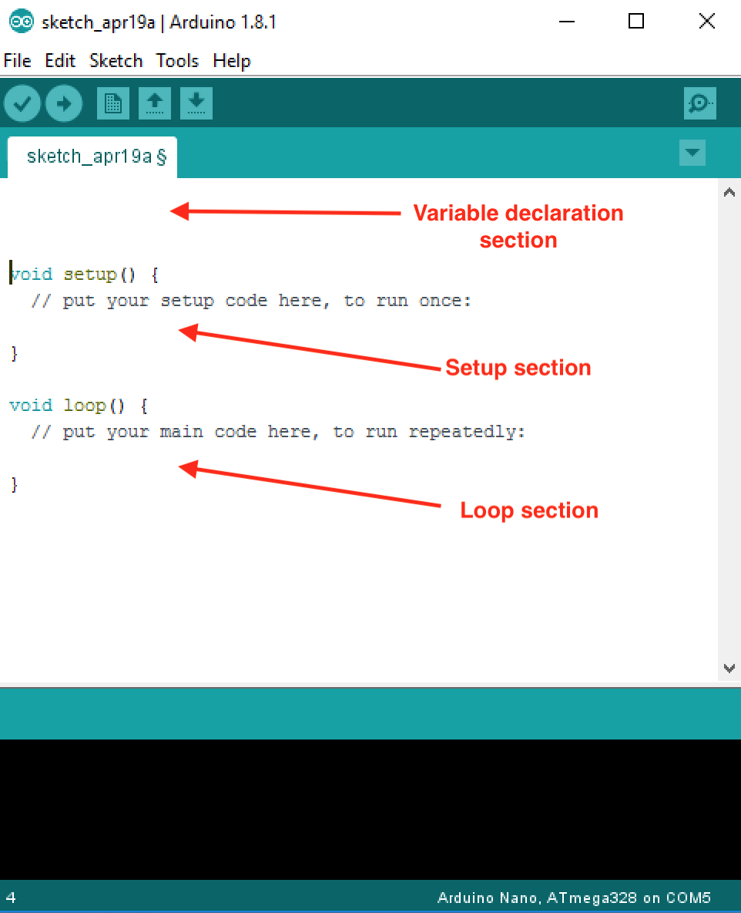
- Variable declaration section. Another important choice that programmers face is where to declare variables. The specific place that variables are declared influences how various functions in a program will see the variable. This is called variable scope.
- The setup() function/section is called when a sketch starts. Use it to initialize variables, pin modes, start using libraries, etc. The setup() function will only run once, after each powerup or reset of the Arduino board.
- The loop() section. After creating a setup() function, which initializes and sets the initial values, the loop() function does precisely what its name suggests, and loops consecutively, allowing your program to change and respond. Use it to actively control the Arduino board.
Try It
- You will first need to connect your Ardunio Nano to the computer and ensure it is setup correctly.
- Connect the Arduino as shown below.
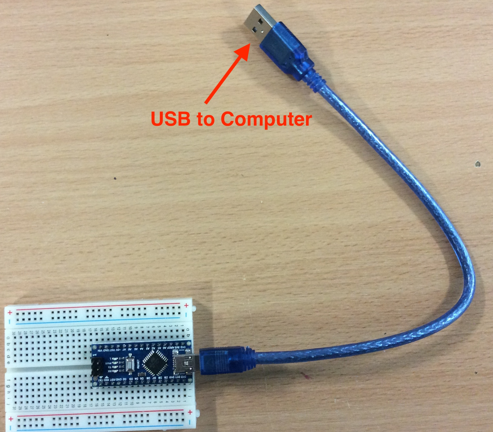
- You then need to ensure the Adrunio is connected to your computer.
- Check the following options are correct.
- You are using the correct Arduino
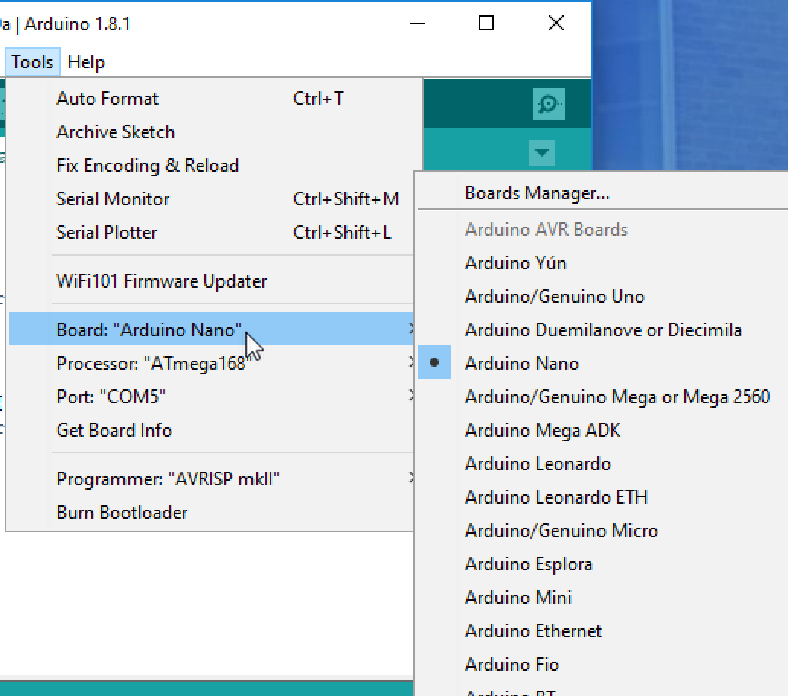
- Select the communications port (COM port)
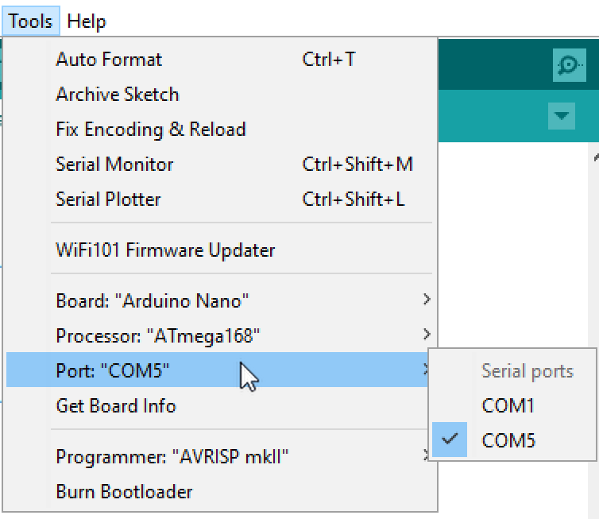
- Select the correct microcontroller type.
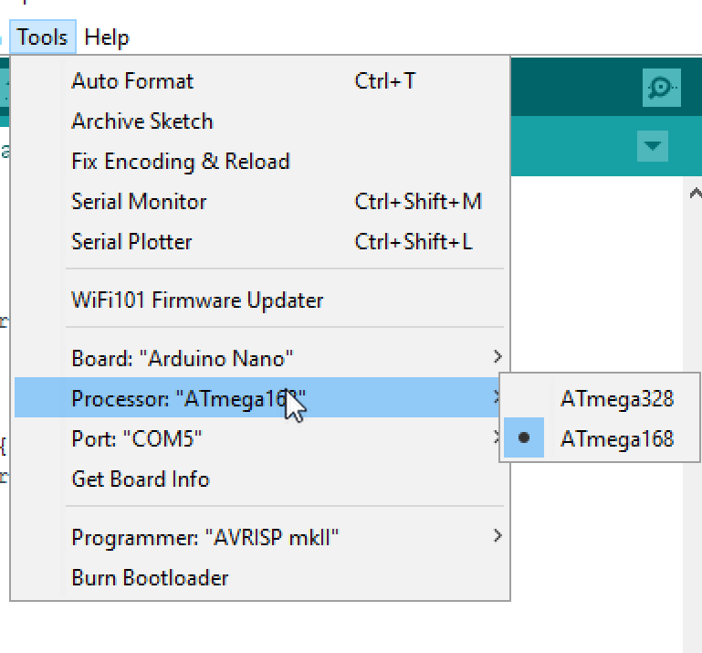
- You can click on upload button with a blank sketch to check if it is connected and everything will work.
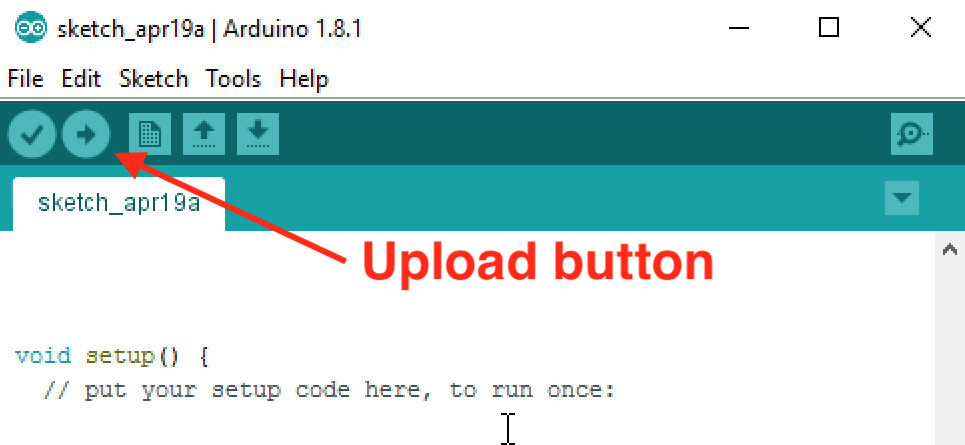
- When it has uploaded, it will say done uploading at the bottom of the IDE, you then know the Arduino is connected and working.
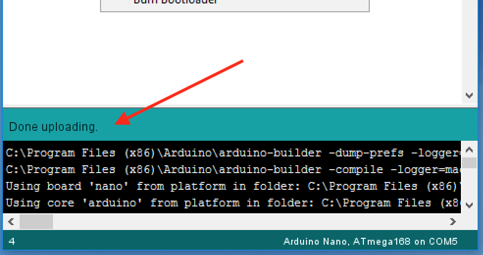
- You are now ready to start programming.
Build It
- We are going connect an LED to one output and start programming.
- Connect the LED to output D2 as shown below.
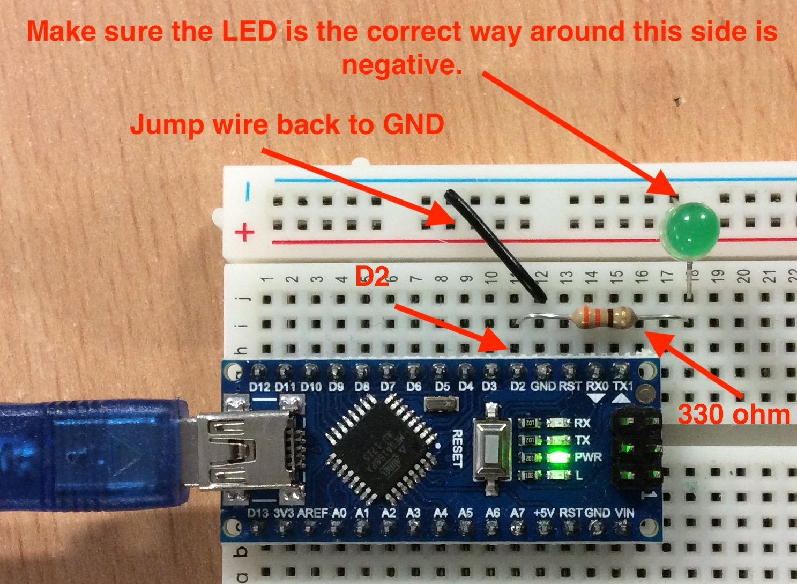
- Bring up the the Arduino IDe and we are going to start writing out first code.
- First we want to declare the intereger variable ledPin (or any name you want) in the variable declaration section.
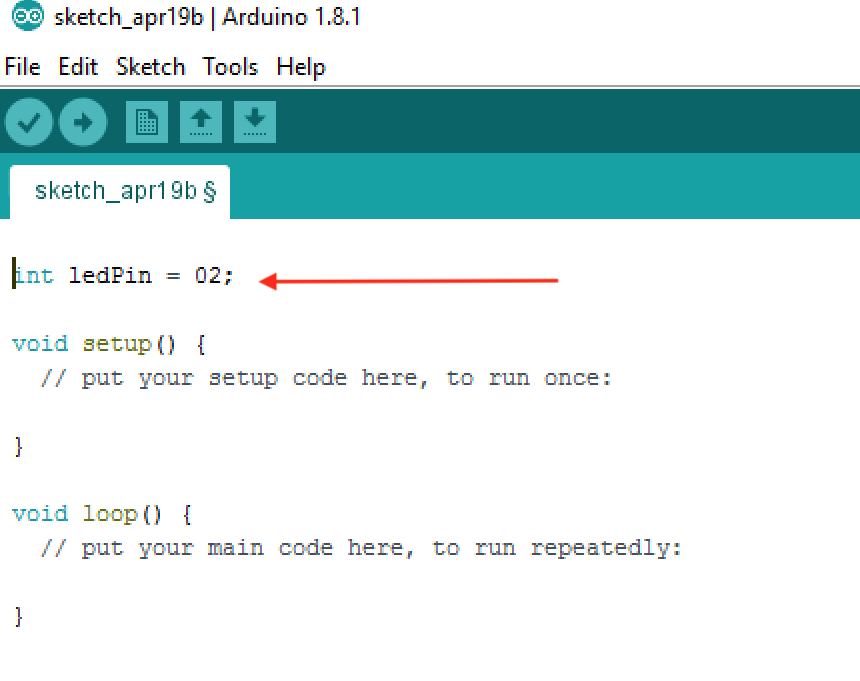
- We then need to setup the pin D2 as an OUTPUT so the Arduino know to use this pin as an output.
- We declare it a ledPin as we have chosen to use as the variable name.
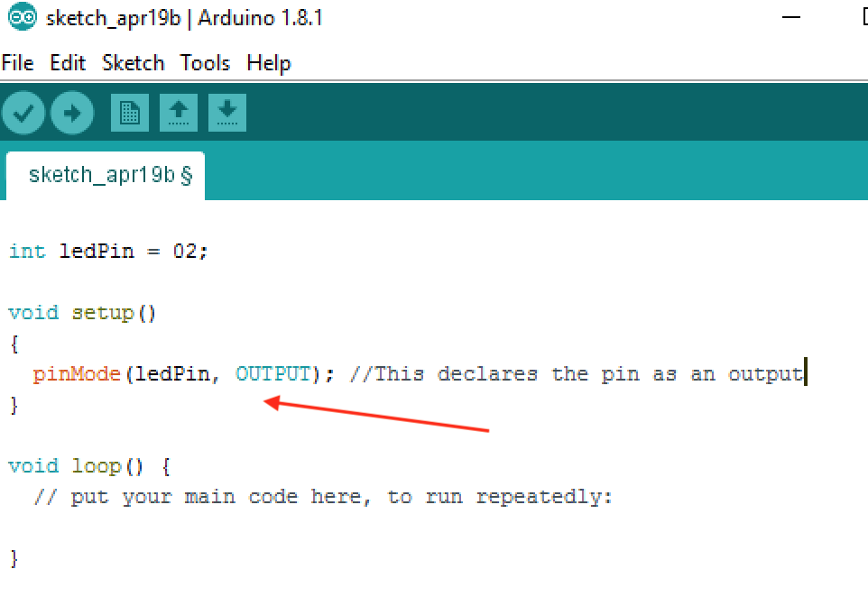
- Now we need to add the code to get the LED to flash.
- This requires a code to turn the LED on and off as well as a delay between the on and off sequence.
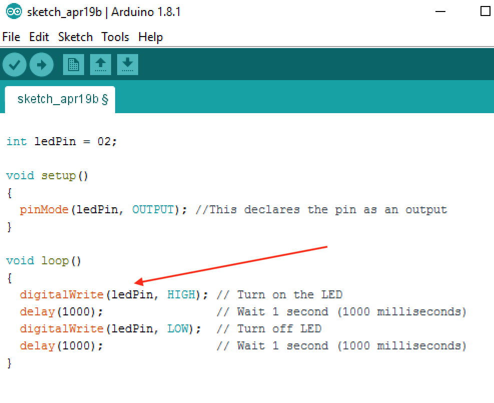
- Once you have written the code, you can click on the Upload button to and see if the program works.

Badge It
- Take a screenshot of you code and upload this to www.bournetolearn.com
- Take a photo of your breadboard and upload it to www.bournetolearn.com